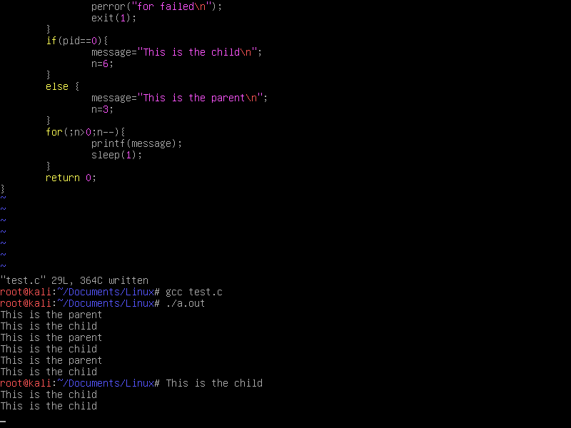
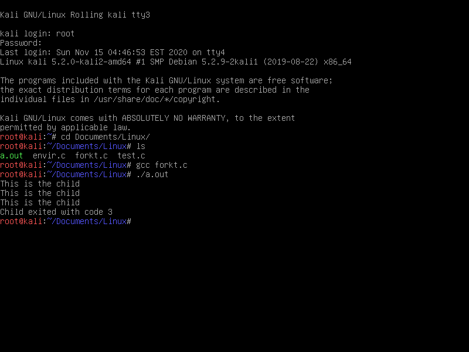

什么是进程
进程的概念是操作系统中最基本、最重要的概念。在多道程序系统（单处理器下并发运行多程序）出现后，为了刻画系统内部出现的动态情况，描述系统内部各道程序的活动规律而引进的一个新概念：
进程是一个可并发执行的具有独立功能的程序关于某个数据集合的一次执行过程，也是操作系统进行资源分配和保护的基本单位。
为什么要引入进程
- 刻画系统的动态性，发挥系统并发性，提高资源的利用率。
- 解决共享性，正确描述程序（可再入）的执行状态。
进程的控制
处理器管理的一个重要工作就是对进程的控制：创建，阻塞，唤醒，挂起，激活，终止，撤销等。
控制与管理由操作系统原语（若干条指令组成的程序段，用于执行特定功能，执行过程中不可被中断）来实现。
创建子进程：
在linux系统中，创建子进程方法有两种：
fork（），创建进程后，子进程是父进程的一个拷贝，拥有相同的变量，打开的文件，但不共享任何内容。
clone() ，与fork()不同的是，允许定义共享内容。
linux所做工作如下：将task_struct结构成员count加1，当父进程或子进程对虚存进行写操作的时候，给子进程的指针所指的数据结构分配内存。
进程数缺省值计算方法：系统内存大小/内核栈大小/2，如内存有512M，则默认上限为：512*1024*1024/8192/2=32768。
例子：
#include <sys/types.h>
#include <unistd.h>
#include <stdio.h>
#include <stdlib.h>
int main(void)
{
pid_t pid;
char *message;
int n;
pid = fork();
if (pid < 0) {
perror("fork failed");
exit(1);
}
if (pid == 0) {
message = "This is the child\n";
n = 6;
} else {
message = "This is the parent\n";
n = 3;
}
for(; n > 0; n--) {
printf(message);
sleep(1);
}
return 0;
}
执行如下：

-
父进程初始化。
-
父进程调用fork，这是一个系统调用，因此进入内核。
-
内核根据父进程复制出一个子进程，父进程和子进程的PCB信息相同，用户态代码和数据也相同。因此，子进程现在的状态看起来和父进程一样，做完了初始化，刚调用了fork进入内核，还没有从内核返回。
-
现在有两个一模一样的进程看起来都调用了fork进入内核等待从内核返回（实际上fork只调用了一次），此外系统中还有很多别的进程也等待从内核返回。是父进程先返回还是子进程先返回，还是这两个进程都等待，先去调度执行别的进程，这都不一定，取决于内核的调度算法。
-
如果某个时刻父进程被调度执行了，从内核返回后就从fork函数返回，保存在变量pid中的返回值是子进程的id，是一个大于0的整数，因此执下面的else分支，然后执行for循环，打印”This is the parent\n”三次之后终止。
-
如果某个时刻子进程被调度执行了，从内核返回后就从fork函数返回，保存在变量pid中的返回值是0，因此执行下面的if (pid == 0)分支，然后执行for循环，打印”This is thechild\n”六次之后终止。fork调用把父进程的数据复制一份给子进程，但此后二者互不影响，在这个例子中，fork调用之后父进程和子进程的变量message和n被赋予不同的值，互不影响。
-
父进程每打印一条消息就睡眠1秒，这时内核调度别的进程执行，在1秒这么长的间隙里（对于计算机来说1秒很长了）子进程很有可能被调度到。同样地，子进程每打印一条消息就睡眠1秒，在这1秒期间父进程也很有可能被调度到。所以程序运行的结果基本上是父子进程交替打印，但这也不是一定的，取决于系统中其它进程的运行情况和内核的调度算法，如果系统中其它进程非常繁忙则有可能观察到不同的结果。另外，读者也可以把sleep(1);去掉看程序的运行结果如何。
-
这个程序是在Shell下运行的，因此Shell进程是父进程的父进程。父进程运行时Shell进程处于等待状态，当父进程终止时Shell进程认为命令执行结束了，于是打印Shell提示符，而事实上子进程这时还没结束，所以子进程的消息打印到了Shell提示符后面。最后光标停在This is the child的下一行，这时用户仍然可以敲命令，即使命令不是紧跟在提示符后面，Shell也能正确读取。fork函数的特点概括起来就是“调用一次，返回两次”，在父进程中调用一次，在父进程和子进程中各返回一次。从上图可以看出，一开始是一个控制流程，调用fork之后发生了分叉，变成两个控制流程，这也就是“fork”（分叉）这个名字的由来了。子进程中fork的返回值是0，而父进程中fork的返回值则是子进程的id（从根本上说fork是从内核返回的，内核自有办法让父进程和子进程返回不同的值），这样当fork函数返回后，程序员可以根据返回值的不同让父进程和子进程执行不同的代码。
阻塞进程和唤醒进程
在linux系统中，与进程的阻塞和唤醒的相关原语有：sleep（暂停），pause（暂停等待信号），wait（等待进程暂停或终止），kill（发信号）。
一个进程终止时，会关闭所有文件描述符，释放用户空间分配的内存，但PCB仍然保存着，内核在其中保存着一些信息。进程的父进程可以调用wait或waitpid获取这些信息，然后彻底清除掉这个进程。
waitpid例子：
#include <sys/types.h>
#include <sys/wait.h>
#include <unistd.h>
#include <stdio.h>
#include <stdlib.h>
int main(void)
{
pid_t pid;
pid = fork();
if (pid < 0) {
perror("fork failed");
exit(1);
}
if (pid == 0) {
int i;
for (i = 3; i > 0; i--) {
printf("This is the child\n");
sleep(1);
}
exit(3);
}
else {
int stat_val;
waitpid(pid, &stat_val, 0);
if (WIFEXITED(stat_val))
printf("Child exited with code %d\n", WEXITSTATUS(stat_val));
else if (WIFSIGNALED(stat_val))
printf("Child terminated abnormally, signal %d\n", WTERMSIG(stat_val));
}
return 0;
}
执行如下：
